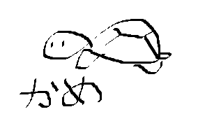

Here we will learn to read hiragana - there are 46 basic hiragana syllables and then there's additional sounds and combined syllables. You can also learn the strokes as you're learning to read the characters if you would like. Check our Additional Resources page to find printable worksheets. In addition, you will also need to learn how to type in Japanese, but we'll come back to that later (visit the home page once you're able to read hiragana somewhat). Here is a basic hiragana chart and the characters' pronunciation (there are more sounds when combined, we'll look at those next). Listen to the video to hear the sounds (the video simply demonstrates the pronunciation, you can turn on the subtitles if you would like).
| hiragana chart of basic syllables | ||||||||||
|---|---|---|---|---|---|---|---|---|---|---|
| あa | かka | さsa | たta | なna | はha | まma | やya | らra | わwa | んn |
| いi | きki | しshi | ちchi | にni | ひhi | みmi | りri | |||
| うu | くku | すsu | つtsu | ぬnu | ふfu | むmu | ゆyu | るru | ||
| えe | けke | せse | てte | ねne | へhe | めme | れre | |||
| おo | こko | そso | とto | のno | ほho | もmo | よyo | ろro | をwo |

a turtle (kame)